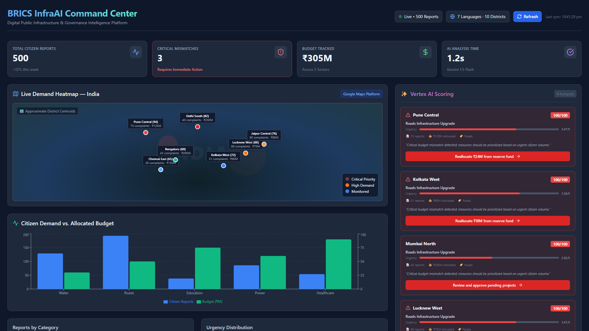

● LIVE WORKING PROTOTYPE · BRICS INNOVATION THEME
BRICS InfraAI
Bridging Citizen Demand and Public Infrastructure Spending.
A multilingual, voice-first Digital Public Good that aggregates ground-level citizen requests, aligns them with real national budgets via Google Gemini & Vertex AI, and guides high-impact policy recommendations.
🤖 Google Gemini 1.5 Flash
🧠 Vertex AI Predictive Model
🎙️ Cloud Speech-to-Text
🌐 Cloud Translation API
🗺️ Google Maps Heatmap
